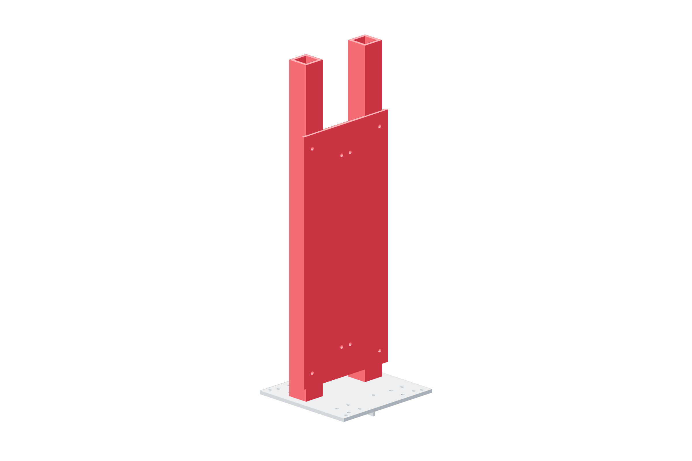

Structure / Z69 / 179
Brace the metal Z mast
The vertical guides mount to a metal bed carried by two 600 mm uprights. Assemble the mast with its load supported.
AddTwo 4040 × 600 mm · 1 z-bed · metal corner joints
Tools / setupSquare · 6 mm hex · clamps / temporary support

- Clamp both uprights to the Y deck in the CAD positions; start their metal corners loosely.
- Start the Z bed fasteners against both uprights.
- Square the bed to the Y carriage in both planes, then seat opposed corner joints.
- Keep a support under the future moving head until Z retention is accepted.
Ready when
The metal mast does not rock at its deck joints and the Z bed is square to the Y carriage in both planes. Printed brackets or friction against one upright are not the specified mast joints. Correct the metal structure before loading it.